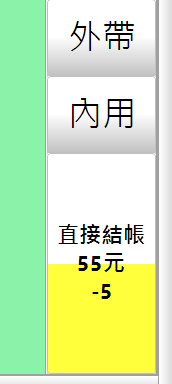

請問能在按下"加點"後不印單 而是改成"加點完"後再一次全印嗎??
2 個回答
您好
站長修正了程式,直接結帳按鈕上的金額扣除了套餐折扣
請至首頁下載更新
站長修正了程式,直接結帳按鈕上的金額扣除了套餐折扣
請至首頁下載更新
本次修改主要是解決 "按下直接結帳後才能知道"套餐折扣"後的實際金額"
所做的修改
修改後:
如果是單點,並且勾選符合套餐,自動算入套餐折扣,會獨立顯示出折扣金額

本次修改主要是解決 "按下直接結帳後才能知道"套餐折扣"後的實際金額"
所做的修改
修改後:
如果是單點,並且勾選符合套餐,自動算入套餐折扣,會獨立顯示出折扣金額
